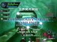

ここでは、これまで公開された、PSOに関するムービーをまとめています。
一部
ドリームキャスト版
のデータ
もご用意しております。
DCでダウンロードができない場合、メモリキャッシュをクリアーするとダウンロードできる可能性が高いです。メモリキャッシュクリアはRボタンを押して「再読み込み」にカーソルをあわせ、XとAを同時に押すとクリアできます。
PC版（高解像度）
PC版
ドリームキャスト版
PSO EPISODE III
店頭公開用ムービー(1分43秒）
320×240（WMV ストリーミング500Kbps）
160×120（WMV ストリーミング56Kbps）
PSO EPISODE I&II PLUS
店頭公開用プロモーションムービー（1分06秒）
320×240（WMV ストリーミング500Kbps）
160×120（WMV ストリーミング56Kbps）
PSO EPISODE I&II
「東京ゲームショウ 2002」配布DVD収録プロモーションムービー
320×240（WMV ストリーミング500Kbps）
160×120（WMV ストリーミング56Kbps）
PSO EPISODE I&II
「東京ゲームショウ 2001秋」で公開したプロモーションムービー
TRAILER- "TGS 2001 Autumn"編
13.0MB（87秒）
TRAILER- "TGS 2001 Autumn"編
7.25MB（87秒）
TRAILER- "TGS 2001 Autumn"編
1.41MB（18秒）
「GameJam in ZeppTokyo」で公開したムービーです。
TRAILER- "GameJam in ZeppTokyo"編
2.59MB（31秒）
TRAILER- "GameJam in ZeppTokyo"編
1.23MB（31秒）
バトルモード編
5.93MB（69秒）
バトルモード編
1.38MB（29秒）
チャレンジモード編
6.15MB（73秒）
チャレンジモード編
1.33MB（29秒）
アルティメットモード編
6.37MB（73秒）
アルティメットモード編
1.41MB（15秒）
ロビーでボール遊び編
6.24MB（56秒）
ロビーでボール遊び編
1.39MB（20秒）
レアアイテム倍増編
5.79MB（70秒）
レアアイテム倍増編
1.39MB（29秒）
「PSO」のテレビCMの映像です。
PSO EPISODE I&II 「放課後の冒険篇」
320×240（WMV ストリーミング500Kbps）
160×120（WMV ストリーミング56Kbps）
PSO

第三弾「はじめまして」編は、2001年2月の世界発売に合わせて放映されました。初めてのオンラインプレイで、誰もが感じる思いをCMにしてみました。（
現在公開は終了致しました。ご了承ください。）
年末年始に放映したSEGA NET GAMEキャンペーンのCMです。
第２弾「はじめて」編・「いいわよ」編
3.87MB（30秒）
第２弾「はじめて」編
1.0MB（15秒）
第２弾「いいわよ」編
1.12MB（15秒）
主に「ゲームWAVE」枠で放映したゲーム画面を中心にしたCMです。
第１弾「夢見てたゲーム編」
2.27MB（15秒）
第１弾「夢見てたゲーム編」
1.04MB（15秒）
年末年始にかけて放送しました「PSO」のテレビCM第２弾です。
■第２弾- 「はじめて」編・「いいわよ」編
SAMPLE
圧縮
MPEG：フルカラー
フレーム数
30フレーム/秒
音質
16bit 22kHz Stereo
サイズ
320*240（3.87MB）
DOWNLOAD
※MOVIEは『Dream Passport』ではご覧になれません。
年末年始にかけて放送しました「PSO」のテレビCM第２弾のDC版です。
■
第２弾「はじめて」編
圧縮
MPEG：フルカラー
フレーム数
30フレーム/秒
音質
16bit 11kHz Stereo
サイズ
320*240（1.0MB）
DOWNLOAD
■第２弾「いいわよ」編
圧縮
MPEG：フルカラー
フレーム数
30フレーム/秒
音質
16bit 11kHz Stereo
サイズ
320*240（1.12MB）
DOWNLOAD
2000年12月に放送しました「PSO」のテレビCM第１弾です。
■第１弾- 「夢見てたゲーム」編
SAMPLE
圧縮
MPEG：フルカラー
フレーム数
30フレーム/秒
音質
16bit 22kHz Stereo
サイズ
320*240（2.27MB）
DOWNLOAD
圧縮
MPEG：フルカラー
フレーム数
30フレーム/秒
音質
16bit 11kHz Stereo
サイズ
320*240（1.04MB）
DOWNLOAD
「東京ゲームショウ 2000春」で公開したプロモーションムービーです。
TRAILER- "TGS 2000 Spring"編
6.2MB（164秒）
Back
Home